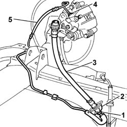
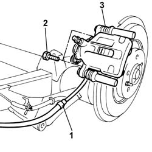
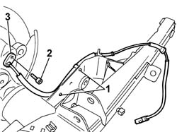
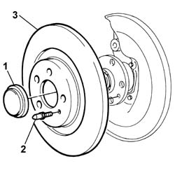
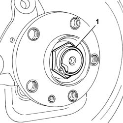
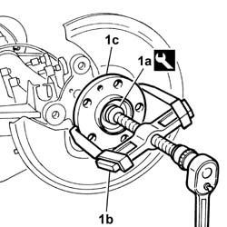
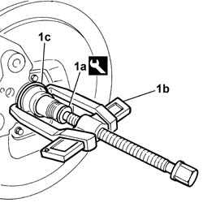
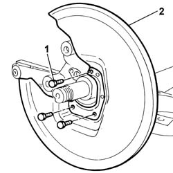
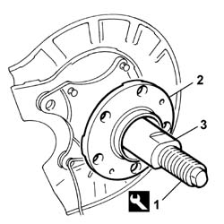

4420D20 REAR SUSPENSION AXLE -REPLACE- INCLUDES R+R, CHECK, PARTS TRANSFER AND BLEEDING
- Path
- Procedures > 44 SUSPENSION AND WHEELS > 4420 REAR SUSPENSION > 4420D REAR SUSPENSION AXLE/CROSSMEMBER > 4420D20 REAR SUSPENSION AXLE -REPLACE- INCLUDES R+R, CHECK, PARTS TRANSFER AND BLEEDING
- Kind
- repair procedure (removal / refitting; the operation number is the code)
- Applies to
- all engines; all production periods
- Interactive page
- https://sloeber94.github.io/elrnDB-fUlss/en/#/179007392
Applies to: all engines; all production periods
 Removing
Removing
 Refitting
RefittingOp. 5530B56 BATTERY DRIP TRAY COVER - R.R.
-
- Disconnect the negative battery terminal.
Op. 4450B13 REAR WHEELS(2) R R
Op. 4420D10 REAR SUSPENSION AXLE - R+R INCLUDES BLEEDING
- Position the vehicle on a lift.
- Position the rear axle on a suitable overhaul stand.
1. Undo the connectors.
2. Keep the springs.
3. Remove the intermediate flexible pipes.
4. Undo the brake caliper connectors.

Applies to: all engines; all production periods
1. Release the handbrake cables from the fastenings on the rear axle.
2. Undo the bolts fixing the brake calipers.
3. Remove the brake calipers complete with handbrake cables.

Applies to: all engines; all production periods
1. Release the ABS sensor wiring from the fastenings on the rear axle.
2. Undo the retaining bolts.
3. Remove the ABS sensors.

Applies to: all engines; all production periods
1. Remove the hub nut covers using a suitable tool.
2. Undo the retaining bolts.
3. Remove the brake discs.

Applies to: all engines; all production periods
1. Remove the chamfering and undo the nuts fixing the wheel hubs/bearings.

Applies to: all engines; all production periods
1. Using the tool (1a) and a suitable USAG 454N/1 extractor or similar tool (1b), remove the wheel hubs/bearings (1c).
 | Description | Code | Function |
|---|---|---|---|
1a | Mounting | 1.845.028.000 | Wheel hub/bearing extraction |

Applies to: all engines; all production periods
1. Using the tool (1a) and a suitable USAG 454N/1 extractor or similar tool (1b), remove the bearing chambers (1c).
| Description | Code | Function |
|---|---|---|---|
1a | Mounting | 1.845.028.000 | Wheel hub/bearing extraction |

Applies to: all engines; all production periods
1. Undo the retaining bolts.
2. Remove the brake disc guards.

Applies to: all engines; all production periods
- Remove the rear axle from the overhaul stand.
Applies to: all engines; all production periods
Refitting
Removing- Position the rear axle complete with bushes on a suitable overhaul stand.
- Position the brake disc guards and tighten the fixing bolts.
1. Tighten the hose for the tool on the stub axle.
| Description | Code | Function |
|---|---|---|---|
1 | Fitting tool | 1.870.879.000 | Fitting rear hub bearing |
2. Position the new wheel hub/bearing assembly on the hose.
3. Tighten the bush for the tool until it is in contact with the wheel hub/bearing.
- Remove the tool.

Applies to: all engines; all production periods
- Tighten the new nuts fixing the wheel hubs/bearings to the axle to the recommended torque.
 | Value - daNm | Fastening | Component | Ø |
|---|---|---|---|---|
. | 38.0 | Nut | REAR WHEEL HUB COMPLETE WITH BEARING | - |
- Using a suitable tool, stake the nuts fixing the wheel hubs/bearings to the axle.
- Position the brake discs and tighten the fixing bolts to the recommended torque.
| Value - daNm | Fastening | Component | Ø |
|---|---|---|---|---|
. | 1.5 | Bolt | REAR BRAKE DISCS | - |
- Position the new hub nut covers.
- Position the ABS sensors and tighten the fixing bolts.
- Secure the wiring to the fastenings on the rear axle.
- Position the brake calipers complete with handbrake cables and tighten the fixing bolts to the recommended torque.
| Value - daNm | Fastening | Component | Ø |
|---|---|---|---|---|
. | 3.5 | Bolt | REAR BRAKE CALIPERS COMPLETE | - |
- Secure the handbrake cables to the fastenings on the rear axle.
- Position the rear brake pipes and secure them to the axle using the special clips.
- Tighten the connectors on the brake calipers to the recommended torque.
| Value - daNm | Fastening | Component | Ø |
|---|---|---|---|---|
. | (Connector on brake caliper) 1.5 | Connector | HOSE TO REAR BRAKE CALIPER | - |
- Position the intermediate flexible pipes.
- Position the springs.
- Tighten the connectors on the intermediate hoses to the specified torque.
| Value - daNm | Fastening | Component | Ø |
|---|---|---|---|---|
. | (Intermediate flexible pipe connector) 1.5 | Connector | HOSE TO REAR BRAKE CALIPER | - |
- Remove the rear axle from the overhaul stand.
Op. 4420D10 REAR SUSPENSION AXLE - R+R INCLUDES BLEEDING
Op. 0010T65 HYDRAULIC BRAKE SYSTEM BLEED AIR
Op. 0010T66 MANUAL GEARBOX OIL CHECK LEVEL AND TOP UP IF NECESSARY
Op. 4450B13 REAR WHEELS(2) R R
- Remove the vehicle from the lift.
- Connect the negative battery terminal.